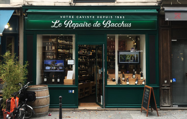
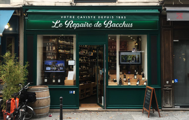

qui sommes-nous ?
votre caviste depuis 1983
Créé en 1983, Le Repaire de Bacchus se positionne dans la pure tradition des “marchands de vin”, avec pour philosophie, la volonté de proposer une large sélection de crus, basée sur des critères de qualité très stricts. Une recette qui fait aujourd’hui du Repaire de Bacchus une référence, connue et reconnue tant par le grand public, que les spécialistes, les vignerons et la presse.
Créé en 1983, Le Repaire de Bacchus se positionne dans la pure tradition des “marchands de vin”, avec pour philosophie, la volonté de proposer une large sélection de crus, basée sur des critères de qualité très stricts. Une recette qui fait aujourd’hui du Repaire de Bacchus une référence, connue et reconnue tant par le grand public, que les spécialistes, les vignerons et la presse.

40 Boutiques

Paris Île de France

Conseil sur-mesure
Sélection XXL

Engagement éco-responsable

2 bars à vins
 
